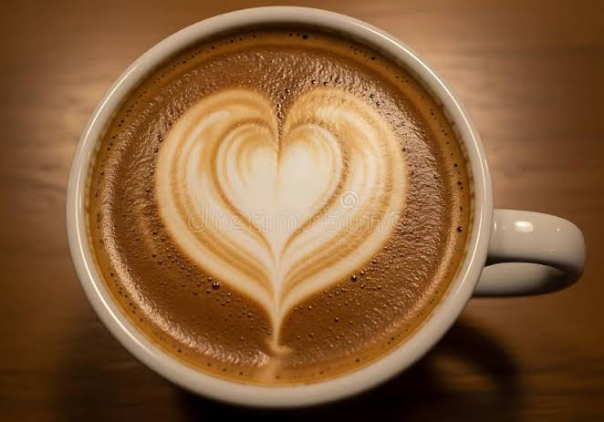
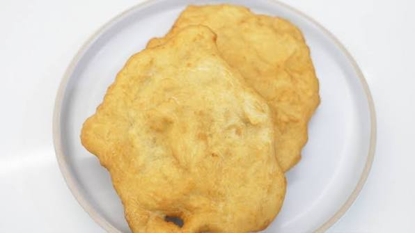
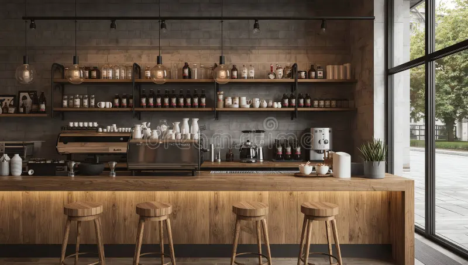
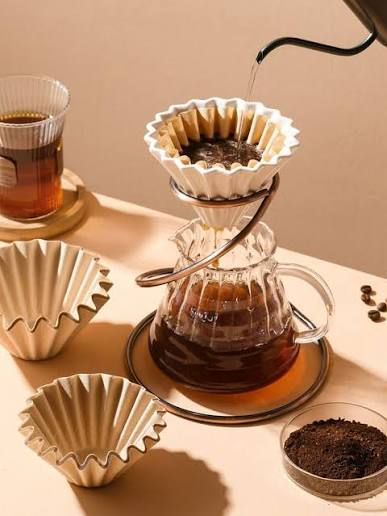
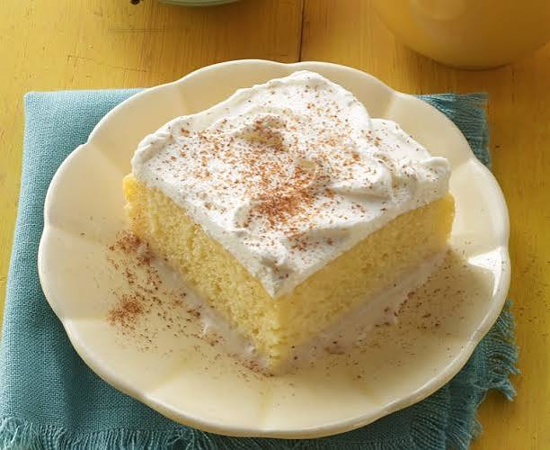

Saltar al contenido
Café Volcán
☰
Inicio
Nosotros
Menú
Galería
Contacto
Galería
Todos
Bebidas
Comida
Local

Latte de la casa

Hojaldras recién fritas

La barra

V60 de Boquete

Tres leches
Granos en el tostador